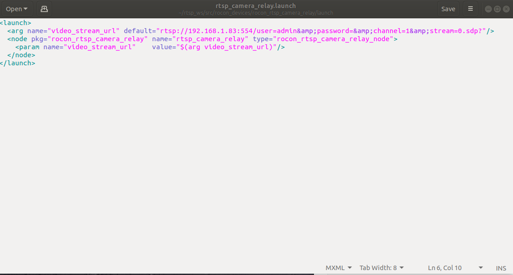
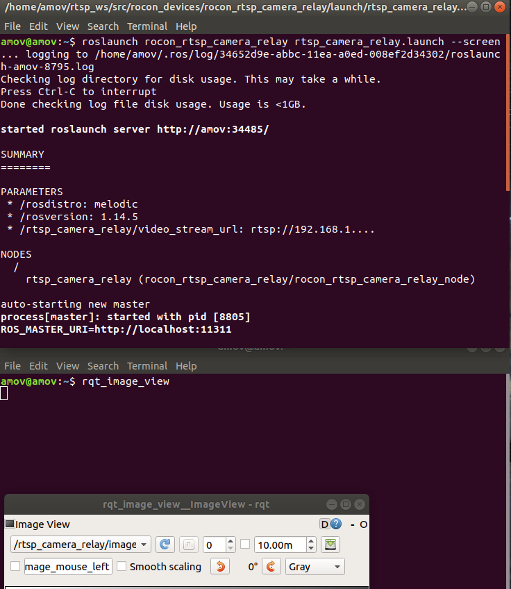

第九章 ROS-RTSP流相机功能包¶
9.0 测试软件环境¶
1.ubuntu 18.04
2.ROS melodic
3.RTSP流相机-ROS功能包
rocon_rtsp_camera_relay
WIKI：http://wiki.ros.org/rocon_rtsp_camera_relay
源码：https://github.com/robotics-in-concert/rocon_devices
备注：软件版本并非强制，可自行测试。
9.1 创建工作空间¶
打开新终端
mkdir -p rtsp_ws/src
cd rtsp_ws/src
git clone https://github.com/robotics-in-concert/rocon_devices.git
cd ..
catkin_make
打开新终端
gedit .bashrc
//文档末尾添加，保存,关闭
source ~/rtsp_ws/devel/setup.bash
source ~/.bashrc
9.2 修改launch文件¶
打开新终端
//修改launch
cd ~/rtsp_ws/src/rocon_devices/rocon_rtsp_camera_relay/launch/
gedit rtsp_camera_relay.launch
添加RTSP链接，提供如下修改示例
default="rtsp://192.168.1.83:554/user=admin&password=&channel=1&stream=0.sdp?"
- 修改后的launch文件如下图：
- 
9.3 启动ROS节点¶
打开新终端
//运行launch，启动ROS节点
roslaunch rocon_rtsp_camera_relay rtsp_camera_relay.launch --screen
可以再打开一个新终端，查看发布的图像话题
rqt_image_view
- 效果如下:
- 